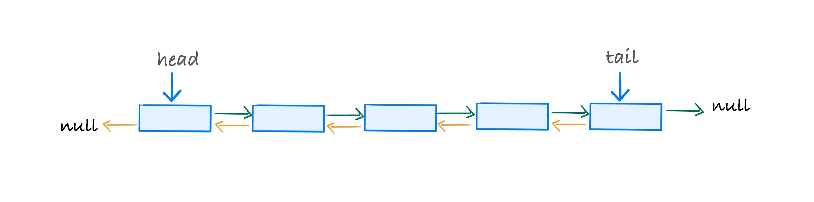
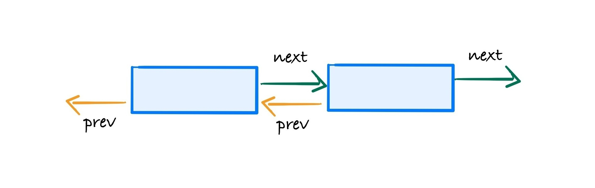
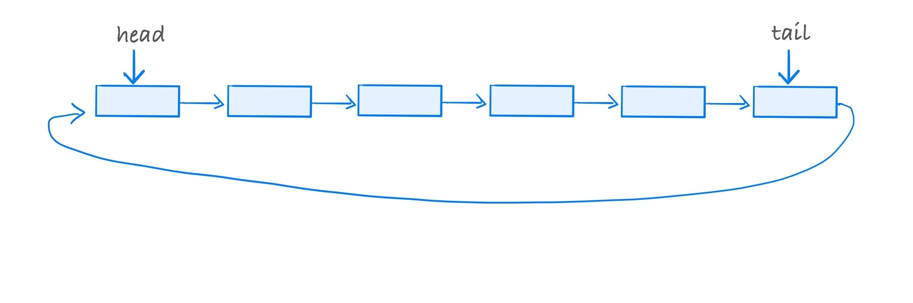
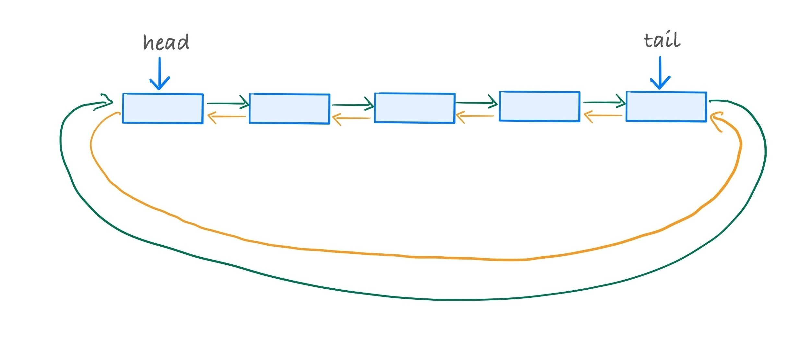
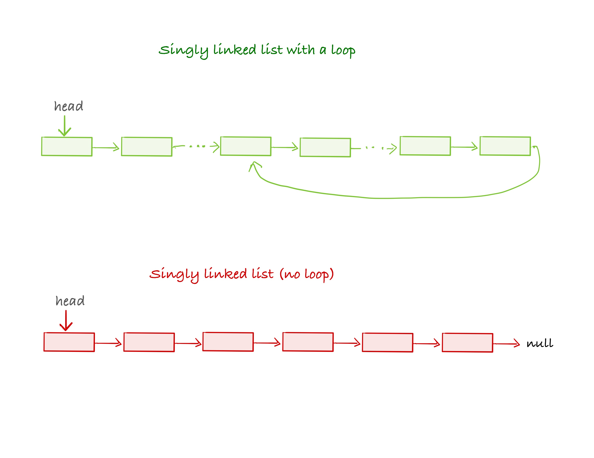

class: center, middle, title-slide # CSCI-UA 102 ## Data Structures <br> ## Lists (Part 3) .author[ Instructor: Joanna Klukowska <br><br><br> ] .license[ Copyright 2020 Joanna Klukowska. Unless noted otherwise all content is released under a <br> [Creative Commons Attribution-ShareAlike 4.0 International License](https://creativecommons.org/licenses/by-sa/4.0/).<br> Background image by Stewart Weiss<br>] --- layout:true template: default name: section class: inverse, middle, center --- layout:true template: default name: poll class: inverse, full-height, center, middle --- layout:true template: default name: breakout class: breakout, middle --- layout:true template:default name:slide class: slide .bottom-left[© Joanna Klukowska. CC-BY-SA.] --- template: section # Other _Flavors_ of a Linked List --- ## Other _Flavors_ of a Linked List The list that we discussed extensively is a __singly linked list__. In that list - there is a single reference from a node to the node that follows, and - the last node's reference is set to `null`. -- In a __doubly linked list__ there is a double connection between the nodes: each node has a reference to the node that follows and to the node that precedes it. -- In a __circular linked list__ the last node is connected back to the first node (instead of having its reference set to null). Circular linked lists could be singly- or doubly linked. --- ## Doubly Linked List .center[  ] -- .right-column2[ ```java class Node<E> { E data; Node<E> next; Node<E> prev; } ```  ] -- - Working with a doubly linked list is very similar to working with a singly linked list, but there are twice as many references to keep track of. -- - Some operations become more efficient. For example, removing the last node, since `tail.prev` provides the reference to the node before last and it does not require iterating through the entire list. -- - Java's `LinkedList<E>` class uses a doubly linked list implementation. --- ## Circular Linked List .left-column2[  ] .right-column2[ Circular __singly__ linked list. - there is a single reference in each node pointing to the next node - the last node's reference, points back to the first node ] -- .below-column2[ ] .left-column2[  ] .right-column2[ Circular __doubly__ linked list. - there two references between a pair of any nodes: one pointing forward, the other pointing back - the last node's `next` reference, points back to the first node - the first node's `prev` reference, points to the last node ] --- template: section # List Equivalence --- template: breakout ### Group Discussion: Checking If Two Lists are Equal? We looked at a method that tested if two `ArrayList<E>` objects were equal. Your task is to come up with a similar test for a singly linked list. Remember the _steps_ that the method for the `ArrayList<E>` class took: - check if the specified object is this list - check if the specified object is a list - check if the lists contain the same elements in the same order Use the LinkedList class on Ed and add the `equals` method to it. For this implementation the second step above should just check if "the specified object is a LinkedList" (not an arbitrary list). ---- Once person in your group should fork the publically available LinkedList workspace and share it with the other people in the group __and with Joanna at jk157@nyu.edu__. --- template: section # Defining and Iterator for our LinkedList --- ## Why do we need iterators? An iterator is an object that allows us to traverse a collection (data structure) and visit each element exactly once. __Objective:__ be able to return the _next_ element fast, i.e., in O(1), so that the entire collection can be traversed in O(N) time. --- name: why-arraylist ## Why do we need iterators? Here is an example of iterating over an `ArrayList<E>` object using an ordinary `for` loop and the `get(index)` method and using an iterator. ```java ArrayList<String> aL = new ArrayList<>(); String [] strings = {"hello", "big", "pink", "cat"}; for (int i = 0; i < strings.length; i++) { aL.add(strings[i]); } System.out.println("Using for loop with .get() method" ); for (int i = 0; i < aL.size(); i++ ) { System.out.println(aL.get(i)); } System.out.println("Using an iterator" ); Iterator<String> itr = aL.iterator(); while (itr.hasNext()){ System.out.println(itr.next() ); } ``` -- What is the performance of each method? - using or loop with .get() method - using an iterator --- template: why-arraylist What is the performance of each method? - using or loop with .get() method __O(N)__ - using an iterator __O(N)__ --- name: why-linkedlist ## Why do we need iterators? Here is an example of iterating over an `LinkedList<E>` object using an ordinary `for` loop and the `get(index)` method and using an iterator. ```java LinkedList<String> lL = new LinkedList<>(); String [] strings = {"hello", "big", "pink", "cat"}; for (int i = 0; i < strings.length; i++) { lL.add(strings[i]); } System.out.println("Using for loop with .get() method" ); for (int i = 0; i < lL.size(); i++ ) { System.out.println(lL.get(i)); } System.out.println("Using an iterator" ); Iterator<String> itr = lL.iterator(); itr = lL.iterator(); while (itr.hasNext()){ System.out.println(itr.next() ); } ``` -- What is the performance of each method? - using or loop with .get() method - using an iterator --- template: why-linkedlist What is the performance of each method? - using or loop with .get() method __O(N<sup>2</sup>)__ (because the `get()` method takes O(N) time) - using an iterator __O(N)__ --- ## How to Implement an Iterator for a Linked List Here is a __very simple__ iterator to satisfies the `Iterator<E>` interface: ```java private class Itr implements Iterator<E> { private Node<E> current = head; public boolean hasNext() { return current != null; } public E next() { E tmp = current.data; current = current.next; return tmp; } } ``` -- and to make the list itself `Iterable`, we need to add the following method to the list ```java public Iterator<E> iterator() { return new Itr(); } ``` --- template:section # Examples and Things to Think About --- ## `LinkedList<E>` source code Study the source code of a doubly linked list implementation provided by the `LinkedList<E>` class in Java. You should be able to understand what it does and why. --- ## Is it circular? Given a reference to the first node, i.e. `head` determine if the list is circular or not. - case 1: assume that there is a `tail` reference pointing to the last node - case 2: assume that there is no `tail` reference What is the performance of these two methods. --- ## Does it have a loop? Given a reference to the first node, i.e. `head` determine if the list has a loop or not (a loop in a list means that the last node points back to another node in the list). .center[  ] --- ## What will this code output? Assume that we execute the following code fragment. What is the output? ```java ArrayList<String> aL = new ArrayList<>(); String [] strings = {"hello", "big", "pink", "cat"}; for (int i = 0; i < strings.length; i++) { aL.add(strings[i]); } Iterator<String> itr = aL.iterator(); System.out.println(itr.next() ); itr.next(); System.out.println(itr.next() ); Iterator<String> itr1 = aL.iterator(); Iterator<String> itr2 = aL.iterator(); System.out.println(itr1.next()); System.out.println(itr2.next()); System.out.println(itr.next()); ``` </optgroup>